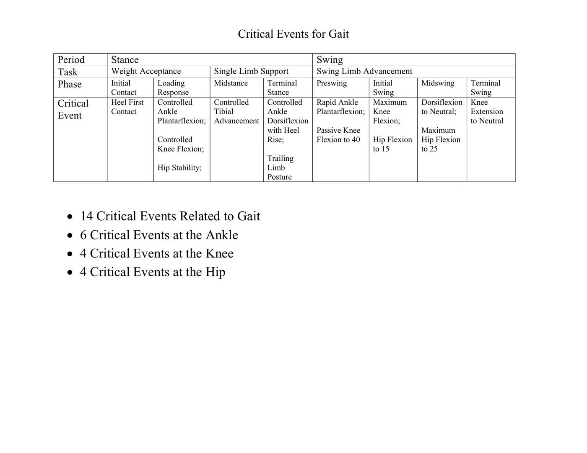
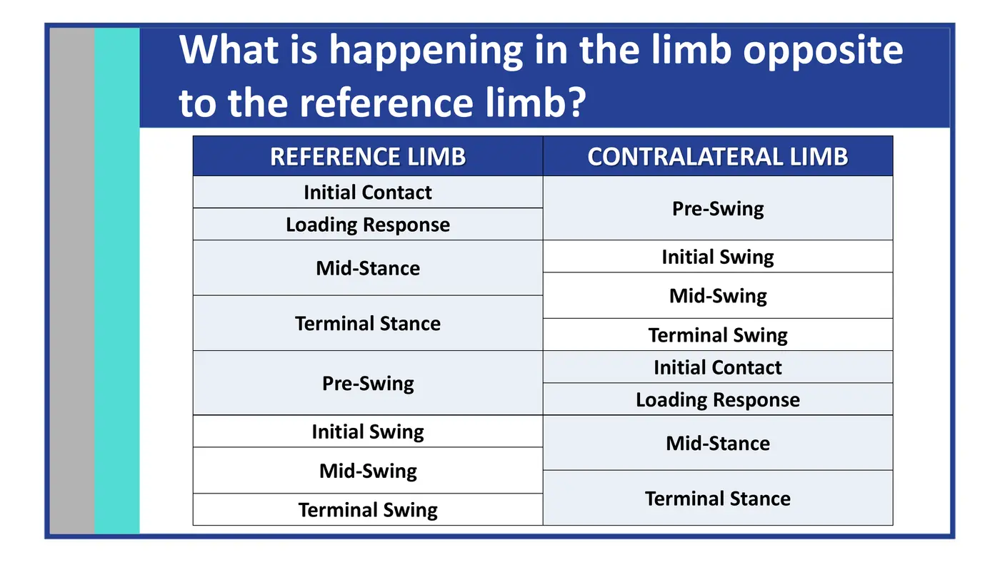
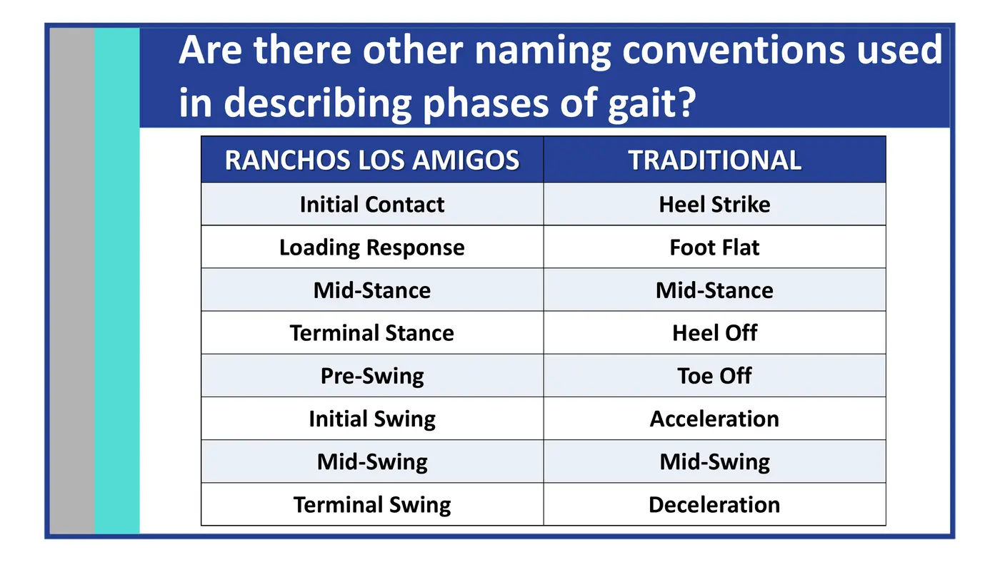
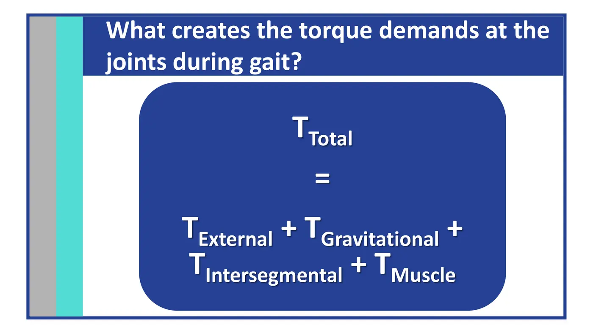
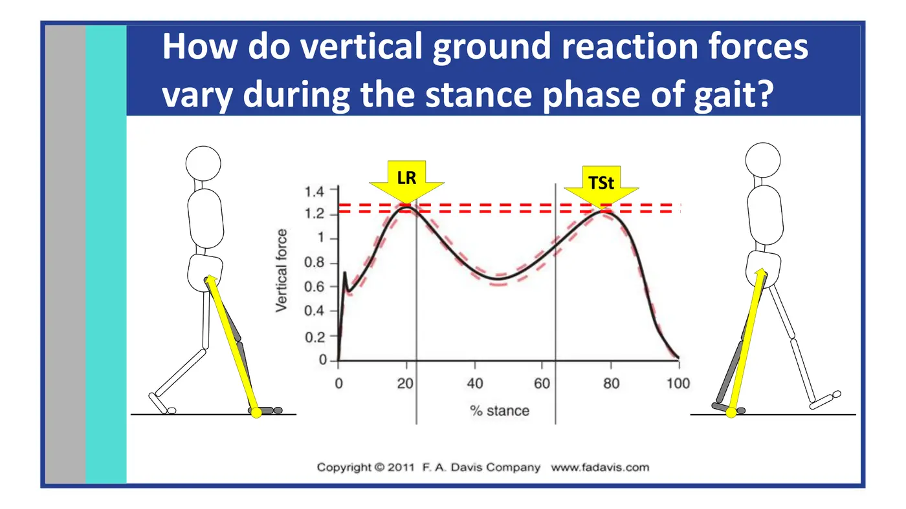
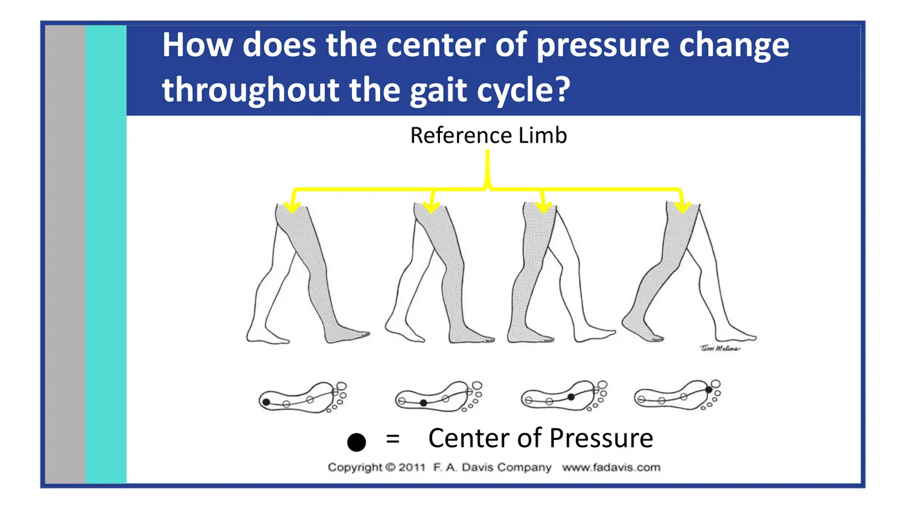
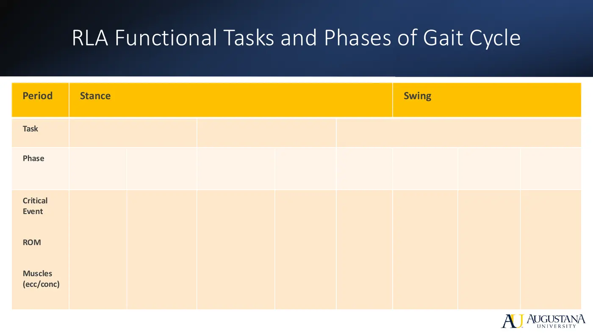
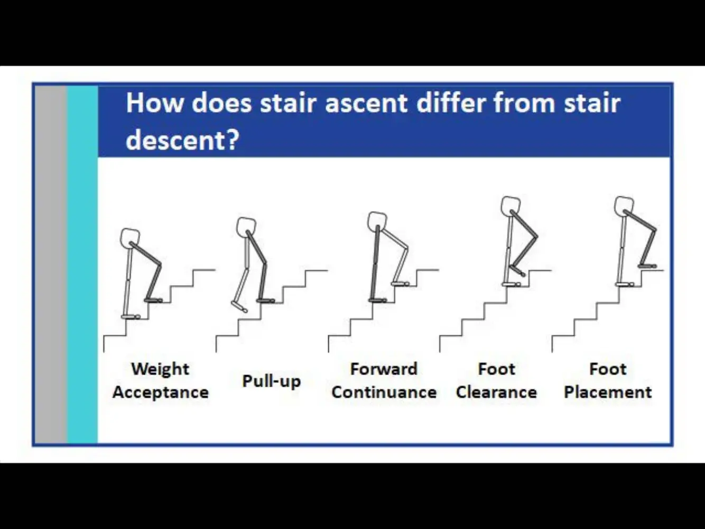

Courses › Movement Science › Module 3
Movement Science · 6221
Module 3 — Analysis of Typical Gait
Topics: 3.1 Characteristics of Typical Gait • 3.2 Need-to-Know Gait Anatomy • 3.3 Tasks of Gait (Weight Acceptance · Single Limb Support · Swing Limb Advancement) • 3.4 Stairs, Running & Motor Control of Gait
📖 How to Use These Notes
- Best used with the lecture playing — keep these open, follow along, and add your own notes as you watch
- Lecture banners mark the start of each topic and run in the same order as the videos
- 🎙 Callouts = direct insights from the instructor's transcript
- ★ Tips = exam-relevant content or things the instructor told you to prepare
- Figures are taken directly from the module's slide decks
- Each topic ends with its own Quick-Reference Glossary
- Written from last year's recordings — if a lecture has been re-recorded or resequenced, Canvas wins
- Watch the lecture videos (Dr. Mike Jones' 8-part Normal Gait series; Dr. Perry's Motor Control of Gait) in your own Canvas module
- The completed gait tables, critical-events sheet, and worksheets live in this course's folders in this Drive
- This is the module the lab practical and every gait-analysis assignment build on — learn the tables cold
TOPIC 3.1
Characteristics of Typical Gait
1. Spatiotemporal Parameters (Part 1)
| Parameter | Definition + norms |
|---|---|
| Step / step length | Contralateral heel strike to heel strike; L-R symmetry of step length = gait symmetry; step duration shortens on a painful/weak side |
| Stride | Two steps — same-limb heel strike to heel strike; ~1 second; stride duration = gait-cycle duration |
| Cadence | ~110 steps/min men, ~116 women; ~180 = double support disappears and running begins |
| Speed | Up to ~120 steps/min, cadence AND stride length rise; beyond that, only cadence increases. “Self-selected/preferred/free” = comfortable speed |
| Step width | ~3.5 in (1–5 in); widens with balance demand — elderly, toddlers (higher COM) |
| Toe-out | ~7° in men at free speed; decreases as speed increases |
| Stance : swing | 62% : 38% |
- Three functional tasks: weight acceptance (the hardest — forward progression + limb stability + shock absorption onto a just-landed, unstably aligned limb), single limb support (one limb owns body weight in both planes), swing limb advancement (whose preparation starts in stance).
2. The Eight Phases and Their Critical Events (Part 2)

| Phase | Window | Critical events |
|---|---|---|
| Initial contact | The instant of floor contact | Heel-first contact · heel-rocker initiation · impact deceleration |
| Loading response | Double support; heel → foot flat | Heel-rocker progression · controlled ankle plantarflexion · controlled knee flexion · hip stability |
| Midstance | 1st half of single support; weight to forefoot | Ankle rocker · controlled tibial advancement (restrained DF) · knee extension · frontal-plane hip stabilization |
| Terminal stance | Body ahead of limb; heel rises | Forefoot-rocker initiation · controlled DF with heel rise · trailing-limb posture · free forward fall |
| Preswing | 2nd double support; opposite IC → toe-off | Rapid ankle plantarflexion · passive knee flexion to 40° |
| Initial swing | Foot up → opposite the stance foot | Maximum knee flexion (60°) · hip flexion to 15° |
| Midswing | → vertical tibia | Dorsiflexion to neutral · maximum hip flexion (25°) |
| Terminal swing | → just before contact | Knee extension to neutral · hip + knee deceleration · adequate DF |


3. Biomechanical Concepts (Part 3)
- Kinematics describes motion without regard to force; kinetics deals with the forces that produce, stop, or modify motion. (Dr. Jones: “Jedi do not study kinematics… no wonder Jedi value the study of kinetics so highly.”) Kinematic focus = joint ROM; kinetic focus = torque demands + muscle actions.


- GRF patterns: vertical — first peak = weight-acceptance braking, second = push-off acceleration, both exceed body weight; A-P — posterior (braking, ~20% BW) early, neutral at midstance, anterior late for push-off; M-L — small and variable. The GRF vector's position relative to each joint sets the external torque (midstance: just anterior to the knee → slight extension torque).

★ Total limb synergy — the concept that unlocks pathologic gait
- Through stance, the SUM of hip + knee + ankle torques stays a net extensor torque — the limb cannot collapse. Consistent across speeds, in health and disability.
- Because only the SUM matters, support is redistributable: weak plantarflexors → hip/knee extensors compensate; painful quads → hip extensors + plantarflexors work harder.
- Net flexor torque in late stance initiates swing; a small net extensor torque returns in late swing to set up contact.
📚 Required resources — Topic 3.1
Topic 3.1 — Quick-Reference Glossary
| Term | Definition |
|---|---|
| Stride = 2 steps | Ipsilateral heel strike to heel strike, ~1 s |
| 62 : 38 | Stance-to-swing split of the cycle |
| Weight acceptance | Progression + stability + shock absorption — the hardest task |
| Critical event | A joint position/motion a phase MUST achieve to succeed (14 total) |
| RLA terms | Initial contact → terminal swing; the course standard |
| GRF two-peak pattern | Braking peak, midstance valley, push-off peak |
| Center of pressure | Origin of the GRF vector; heel → lateral midfoot → medial forefoot → toes |
| Total limb synergy | Net extensor torque through stance; compensation currency |
TOPIC 3.2
Need-to-Know Gait Anatomy
- The organizing framework: concentric = propulsion, eccentric = control (brakes/shock absorption), isometric = stability. Every muscle does all three at different points — this lecture anchors ONE highlighted role per group; the phase-by-phase detail arrives in Topic 3.3.
| Muscle group | Highlighted role | Where it earns it |
|---|---|---|
| Hip flexors — iliopsoas, rectus femoris | Propulsion (concentric) | Pull the thigh through in initial swing |
| Hip extensors — glute max, hamstrings | Control (eccentric) | Loading response — stop the trunk from collapsing forward |
| Hip abductors — glute med/min | Stability (isometric) | Single-leg stance keeps the pelvis level; weakness = contralateral drop (Trendelenburg) |
| Hip adductors — longus, magnus | Propulsion (concentric) | Assist pulling the limb through + mediolateral guidance |
| Quadriceps | Control (eccentric) | Loading response — absorb shock, prevent buckling |
| Hamstrings | Control (eccentric) | Terminal swing — stop the leg snapping into extension |
| Popliteus | Stability | Unlocks the knee; rotational stability in stance |
| Tibialis anterior | Control (eccentric) | Initial contact — lower the foot without a slap (+ concentric clearance in swing) |
| Gastroc-soleus | Propulsion (concentric) | Terminal-stance push-off (+ eccentric tibial control at midstance) |
| Tibialis posterior | Stability (isometric) | Holds the medial arch through stance |
| Peroneals (fibularis longus/brevis) | Stability (isometric) | Lateral ankle support — the everters that stop the roll |
| Foot intrinsics | Stability (isometric) | Arch + toes → rigid lever for push-off; weakness → flat-foot, weak propulsion |
- Two-joint muscles (hamstrings, rectus femoris, gastrocnemius) transfer energy across joints — lengthening at one end while shortening at the other. The hamstring double-duty: extend/stabilize the hip in stance AND eccentrically control knee extension in terminal swing. Tight or weak two-joint muscles create two-joint gait deviations.
📚 Required resource — Topic 3.2
Topic 3.2 — Quick-Reference Glossary
| Term | Definition |
|---|---|
| Concentric / eccentric / isometric | Propulsion / control / stability — the gait framework |
| Pretibials | Tib ant + EHL + EDL — the controlled-lowering and clearance crew |
| Trendelenburg sign | Contralateral pelvic drop from weak stance-side abductors |
| Rigid lever | What the intrinsics + midtarsal locking make of the foot at push-off |
| Two-joint muscle | Hamstrings, rectus femoris, gastroc — cross-joint energy transfer |
TOPIC 3.3
Tasks of Gait: The Biomechanics, Phase by Phase
1. Weight Acceptance (IC + LR — Part 4)
- Initial contact: ankle neutral; heel contact behind the ankle axis creates a plantarflexion torque — pretibials work isometrically to hold position. Knee looks neutral (technically ~5° flexed), stabilized by a brief extension torque; hamstrings counteract, quads pre-armed. Thigh holds 20° flexion with a high hip-flexion torque — ALL hip extensors fire (glute max + adductor magnus primary). Pelvis: 5° forward rotation (relative hip ER) — the limb is in forward reach.
- Loading response — the heel rocker: the rounded calcaneus becomes a fulcrum; ankle drops to 5° PF under eccentric pretibial control (tib ant peaks — no foot slap); the pretibials tie the tibia forward and the eccentrically restraining quads (knee to 15°) carry that progression to the femur — the fall is converted into forward momentum. Late LR: soleus/gastroc switch on to control the tibia. Subtalar: calcaneus everts 5° (pronation) — shock absorption, internal tibial rotation (watch the tibial tuberosity), midtarsal unlocking. Pelvis holds 5° forward; slight contralateral drop under eccentric hip-abductor control.
2. Single Limb Support (MSt + TSt — Part 5)
- Midstance — the ankle rocker: ankle moves to 5° DF against a rising DF torque; eccentric soleus (+gastroc) meters tibial advancement, making the tibia a stable base — the knee extends 15°→5° from contralateral-swing momentum and the quads switch OFF mid-phase. Hip reaches neutral with NO sagittal muscle demand; abductors keep the pelvis level; pelvis derotates to neutral (relative hip IR).
- Terminal stance — the forefoot rocker: ankle to 10° DF; the peak DF torque here is the single largest muscle demand of the entire cycle (calf at maximum, preventing tibial collapse while the heel rises). Subtalar supinates (eversion → ~2°), the midtarsal locks into a rigid lever, tibia externally rotates; MTPs extend 30°; body weight falls beyond the foot — the strongest propelling force in gait, restrained by vigorous gastroc-soleus. Knee holds 5° (quads silent; calf restraint stabilizes; short-head biceps may guard hyperextension). Thigh trails at 20° extension; pelvis rotates 5° backward; step length maximized.
3. Swing Limb Advancement (PSw → TSw — Parts 6–7)
| Phase | Ankle/foot | Knee | Hip/pelvis |
|---|---|---|---|
| Preswing | → 15° PF; calf ceases early — residual activity + passive tension; MTPs 60° ext; forefoot balances | Passive flexion to 40° — unloading + ankle PF generate it (gracilis minimal; RF may restrain). More than half of swing's knee flexion happens here | Thigh falls to 10° extension; adductor longus (concentric) starts hip flexion; pelvis 5° backward, slight ipsilateral drop begins |
| Initial swing | 15 → 5° PF; pretibials concentric (EHL/EDL peak); MTPs to neutral | → 60° flexion (thigh advance + tibial inertia; biceps SH, sartorius, gracilis peak) | → 15° flexion (iliacus, gracilis, sartorius peak); relative ER resumes |
| Midswing | → neutral; foot clears by ~1 cm | Extends to 25° — entirely momentum + gravity (biceps SH may restrain; hamstrings onset late) | → 25° flexion; hamstrings begin decelerating; pelvis to neutral |
| Terminal swing | Neutral held isometrically → heel-first contact assured | → neutral; quads concentric ensure extension; hamstrings peak as decelerators | Thigh settles to 20° flexion; hip + pelvic stabilizers pre-activate for the next weight acceptance; pelvis 5° forward |
- Trunk: stays erect but rotates ~5° OPPOSITE the pelvis — that counter-rotation is arm swing (opposite arm and leg advance together); back extensors + abdominals stabilize all three planes.

📚 Required reading — Topic 3.3
Topic 3.3 — Quick-Reference Glossary
| Term | Definition |
|---|---|
| Three rockers | Heel (LR) → ankle (MSt) → forefoot (TSt) — the progression system |
| Femur-vs-vertical convention | How all hip angles in this series are measured |
| Eccentric soleus at MSt | The yielding brake that makes knee extension possible |
| Peak DF torque at TSt | The biggest single muscle demand in the cycle |
| Pronation → supination | Shock absorption + unlocking, then rigid-lever locking |
| Passive 40° knee flexion | Preswing's gift to limb clearance |
| Hamstrings at TSw | Peak activity — thigh and leg deceleration |
| Trunk counter-rotation | ~5° opposite the pelvis = arm swing |
TOPIC 3.4
Stairs, Running, and the Motor Control of Gait
1. Starting, Stopping, and Surface Changes (Part 8)
- Gait initiation starts with an INHIBITION: gastroc-soleus switch off, then bilateral tibialis anterior pulls the tibiae forward — the body leans from the ankles. COP shifts posteriorly and briefly toward the swing foot → stance heel → stance forefoot. Either leg can lead; the elderly keep the pattern with smaller, slower displacements. Termination is anticipatory: push-off drops, the swing limb's extensors become energy absorbers, braking forces land at contact, then a large soleus burst (with quieted tib ant) stops progression over the planted foot.
- Treadmill vs overground: higher cadence + shorter stance at matched speed; joint moments similar; push-off and peak GRF a bit lower. Running: double support disappears, float periods appear (growing with speed); same muscle sequencing (soleus fires earlier) at much higher magnitudes; base of support narrows from 2–4 inches to a single line, so functional limb varus increases ~5° and demands rise in ALL three force directions.

| Stair phase | What happens |
|---|---|
| Weight acceptance | ≈ IC + LR — but contact happens on the FOREFOOT, then shifts back toward the midfoot |
| Pull-up | Single support with hip-knee-ankle all flexed — the unstable moment; knee extensors generate most of the energy |
| Forward continuance | ≈ MSt → PSw; ankle plantarflexors produce the greatest energy |
| Foot clearance / placement | ≈ ISw+MSw / TSw |
- Ascent = concentric work (rectus femoris, vastus lateralis, soleus, medial gastroc); descent = eccentric energy absorption by the same muscles — and the peak internal hip-abductor moment happens going DOWN, not up. Level-ground competence never guarantees stair competence.
2. Motor Control of Gait (Dr. Perry)
- ICF placement: the gait pattern = body structure/function; walking as mobility = activity/participation. Three essential requirements: progression (rhythmic interlimb coordination + initiation/termination), postural control (orientation + stability of the COM over a MOVING base of support; steady-state vs reactive vs anticipatory/proactive — experience and vision buy you proactive control), adaptation (obstacles, turns, speed changes, terrain — unpredictable; the hallmark of functional mobility; dual-tasking raises the load).
- Steady-state velocity is reached in 1–3 steps — which is why gait-speed measures include extra meters for acceleration and deceleration.
- Central pattern generators: spinal circuits produce the basic locomotor rhythm; feedback from Golgi tendon organs (limb loading) and hip-position muscle spindles (trailing limb) regulates stepping. Evidence: newborn automatic stepping, spinalized-cat research — the foundation of locomotor training. Clinical takeaway: help patients recover the trailing-limb position when retraining walking. Descending control: cerebrum integration = coordination, weight support, propulsion; cerebellum = error detection + step-cycle fine-tuning (cerebellar lesions → ataxic gait, next module); cortex + basal ganglia + brainstem = postural tone, rhythmic stepping, initiation. Sensory and cognitive systems complete the picture.
📚 Required resources — Topic 3.4 + sync
Topic 3.4 — Quick-Reference Glossary
| Term | Definition |
|---|---|
| Initiation trigger | Gastroc-soleus inhibition → tib ant pull → lean from the ankles |
| Float period | Running's both-feet-off interval; grows with speed |
| Functional limb varus | +~5° in running as feet land on one line |
| Pull-up | Stair stance's knee-extensor-powered lift |
| Descent abductor rule | Peak hip-abductor moment is on the way DOWN |
| Progression · postural control · adaptation | Perry's three requirements of locomotion |
| CPG | Spinal rhythm generator tuned by GTO + spindle feedback |
| Trailing-limb position | The retraining target that drives the stepping reflex |
SYNC SESSION
Gait Tables and Team Task Analysis
The sync session builds the gait tables as a class (the completed version is saved in this course's folders in this Drive, with the blank Gait Chart and worksheets), runs the Gait Grid stepping-observation activity, and launches the team assignment: a full task analysis of a short walking video using the movement-analysis worksheets from Module 2's Hedman framework.
✅ Module 3 assessments
- Typical Movement: Task Analysis in Teams — analyze the linked video with the gait worksheets
- Emerging Technology in Movement Analysis assignment (carried with the module pair)
- Check your own Canvas for due dates